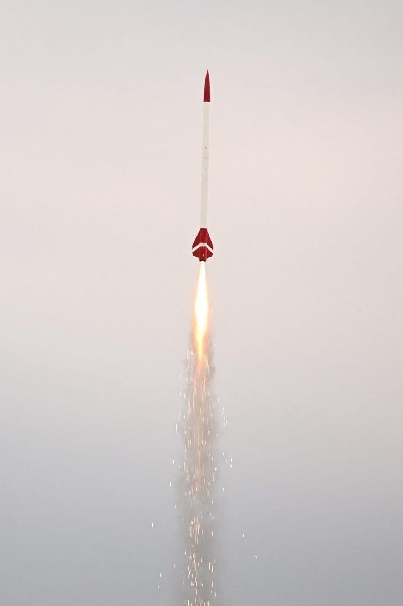

Overview

Darkstar is a fibreglass-modified high-power rocket designed for consistent and reliable flights using mid- to high-power motors.
Key Specifications
- Motor mount: 38 mm
- Motor range: G – J
- Airframe: Fibreglass
- Purpose: High-power flight testing
Flight Performance
| Flight | Motor | Predicted Altitude (m) | Actual Altitude (m) |
|---|---|---|---|
| 1 | H125 | 600 | 505 |
| 2 | I170 | 903 | 1085 |
Performance Analysis
Flight data shows variation between predicted and actual altitude, highlighting the influence of real-world aerodynamic and environmental factors. The second flight exceeded predicted performance, indicating improved efficiency or favourable conditions.
Engineering Insights
- Performance prediction accuracy varies with motor and flight conditions.
- Aerodynamic drag and launch conditions significantly influence altitude.
- Consistent structural behaviour contributes to reliable high-power operation.
Engineering Relevance
This project provides practical experience in flight testing, performance validation, and aerodynamic behaviour in real-world conditions. It complements simulation-based work by offering direct insight into system-level performance.